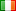

| Overall top 5 | |||||||
| Pos | Nation | Name | Team | Div | Maps | Frags | Average |
| 1 |  | Milton | tVS | 1 | 15 | 1312 | 87.5 |
| 2 | | Milton | tVS | 5 | 15 | 1312 | 87.5 |
| 3 |  | ok98 | O | 6 | 20 | 1205 | 60.3 |
| 4 | | ok98 | O | 2 | 20 | 1205 | 60.3 |
| 5 | | Slaughter | SSC | 7 | 20 | 1141 | 57.1 |
| more | |||||||
| Division 1 top 5 | |||||||
| Pos | Nation | Name | Team | Div | Maps | Frags | Average |
| 1 | | Milton | tVS | 1 | 15 | 1312 | 87.5 |
| 2 |  | murdoc | ]SR[ | 1 | 19 | 1006 | 52.9 |
| 3 |  | zero | ]SR[ | 1 | 19 | 942 | 49.6 |
| 4 | | blAze | tVS | 1 | 15 | 931 | 62.1 |
| 5 | | Xantom | tVS | 1 | 13 | 928 | 71.4 |
| more | |||||||
| Division 2 top 5 | |||||||
| Pos | Nation | Name | Team | Div | Maps | Frags | Average |
| 1 | | ok98 | O | 2 | 20 | 1205 | 60.3 |
| 2 | | springs | .b. | 2 | 18 | 1060 | 58.9 |
| 3 |  | Soma | ~DA~ | 2 | 19 | 1049 | 55.2 |
| 4 | | Djevulsk (dje) | O | 2 | 20 | 1012 | 50.6 |
| 5 | | Creature | ~DA~ | 2 | 19 | 941 | 49.5 |
| more | |||||||
| Division 3 top 30 | |||||||
| Pos | Nation | Name | Team | Div | Maps | Frags | Average |
| 1 | | Slaughter | SSC | 3 | 20 | 1141 | 57.1 |
| 2 | | Snapcase | tks | 3 | 18 | 1140 | 63.3 |
| 3 | | Mingle | SSC | 3 | 20 | 1101 | 55.1 |
| 4 |  | ddk | tks | 3 | 18 | 1101 | 61.2 |
| 5 | | chafe | SSC | 3 | 20 | 1031 | 51.6 |
| 6 | | rekk | SSC | 3 | 20 | 910 | 45.5 |
| 7 | | en_karl | tks | 3 | 16 | 895 | 55.9 |
| 8 | | Hooraytio | csn | 3 | 15 | 739 | 49.3 |
| 9 |  | glt | 44 | 3 | 17 | 702 | 41.3 |
| 10 | | plate | 44 | 3 | 15 | 682 | 45.5 |
| 11 | | Sajko | csn | 3 | 16 | 658 | 41.1 |
| 12 | | Junkass | csn | 3 | 11 | 624 | 56.7 |
| 13 | | Pyta | csn | 3 | 12 | 523 | 43.6 |
| 14 | | samon | 44 | 3 | 15 | 500 | 33.3 |
| 15 | | Kalma | csn | 3 | 12 | 459 | 38.3 |
| 16 | Squeeze | tks | 3 | 7 | 432 | 61.7 | |
| 17 | | Fern | tks | 3 | 11 | 424 | 38.5 |
| 18 | Fl4m3r | csn | 3 | 9 | 403 | 44.8 | |
| 19 | | qs | 44 | 3 | 10 | 301 | 30.1 |
| 20 | | Nonak | 44 | 3 | 11 | 270 | 24.5 |
| 21 | | smg | sNBa | 3 | 6 | 262 | 43.7 |
| 22 | | shaka (pulga) | BM | 3 | 6 | 239 | 39.8 |
| 23 | | zaiko | BM | 3 | 4 | 216 | 54 |
| 24 | | web | BM | 3 | 6 | 211 | 35.2 |
| 25 | | ekz | sNBa | 3 | 6 | 208 | 34.7 |
| 26 | | conus | sNBa | 3 | 6 | 205 | 34.2 |
| 27 | | Itsinen / MulleMulvad | BM | 3 | 4 | 131 | 32.8 |
| 28 | | Don Stefano / stefan | -os- | 3 | 8 | 129 | 16.1 |
| 29 | | r251 | 44 | 3 | 4 | 128 | 32 |
| 30 |  | Stev | tks | 3 | 2 | 102 | 51 |
| less | |||||||
| Division 4 top 5 | |||||||
| Pos | Nation | Name | Team | Div | Maps | Frags | Average |
| 1 | | Domin | Para | 4 | 21 | 1076 | 51.2 |
| 2 | | zlt | CCS | 4 | 16 | 909 | 56.8 |
| 3 | | feari | Para | 4 | 17 | 906 | 53.3 |
| 4 | | Kwibus | cn | 4 | 14 | 867 | 61.9 |
| 5 | | Pre(void) | cn | 4 | 14 | 826 | 59 |
| more | |||||||
| Playoffs Division 1 top 5 | |||||||
| Pos | Nation | Name | Team | Div | Maps | Frags | Average |
| 1 | | Milton | tVS | 5 | 15 | 1312 | 87.5 |
| 2 | | murdoc | ]SR[ | 5 | 19 | 1006 | 52.9 |
| 3 | | zero | ]SR[ | 5 | 19 | 942 | 49.6 |
| 4 | | blAze | tVS | 5 | 15 | 931 | 62.1 |
| 5 | | Xantom | tVS | 5 | 13 | 928 | 71.4 |
| more | |||||||
| Playoffs Division 2 top 5 | |||||||
| Pos | Nation | Name | Team | Div | Maps | Frags | Average |
| 1 | | ok98 | O | 6 | 20 | 1205 | 60.3 |
| 2 | | springs | .b. | 6 | 18 | 1060 | 58.9 |
| 3 | | Soma | ~DA~ | 6 | 19 | 1049 | 55.2 |
| 4 | | Djevulsk (dje) | O | 6 | 20 | 1012 | 50.6 |
| 5 | | Creature | ~DA~ | 6 | 19 | 941 | 49.5 |
| more | |||||||
| Playoffs Division 3 top 5 | |||||||
| Pos | Nation | Name | Team | Div | Maps | Frags | Average |
| 1 | | Slaughter | SSC | 7 | 20 | 1141 | 57.1 |
| 2 | | Snapcase | tks | 7 | 18 | 1140 | 63.3 |
| 3 | | Mingle | SSC | 7 | 20 | 1101 | 55.1 |
| 4 | | ddk | tks | 7 | 18 | 1101 | 61.2 |
| 5 | | chafe | SSC | 7 | 20 | 1031 | 51.6 |
| more | |||||||
| Playoffs Division 4 top 5 | |||||||
| Pos | Nation | Name | Team | Div | Maps | Frags | Average |
| 1 | | Domin | Para | 8 | 21 | 1076 | 51.2 |
| 2 | | zlt | CCS | 8 | 16 | 909 | 56.8 |
| 3 | | feari | Para | 8 | 17 | 906 | 53.3 |
| 4 | | Kwibus | cn | 8 | 14 | 867 | 61.9 |
| 5 | | Pre(void) | cn | 8 | 14 | 826 | 59 |
| more | |||||||